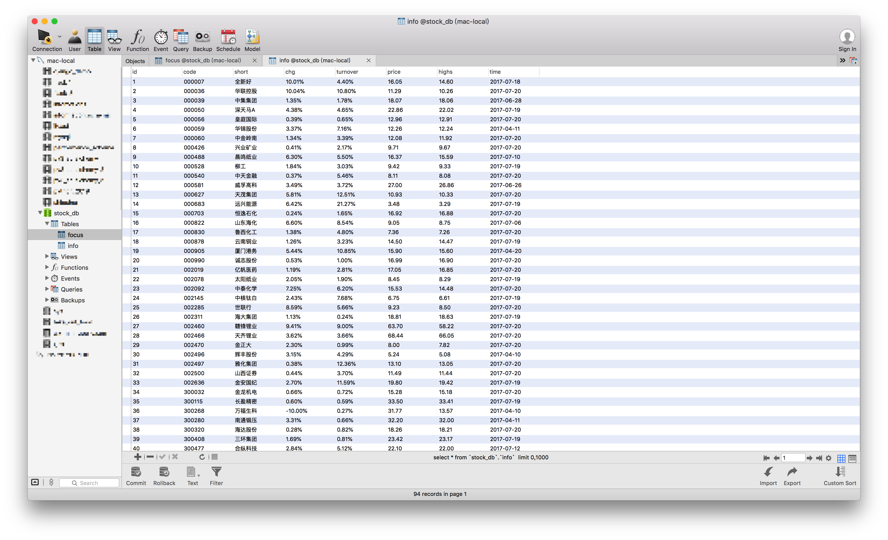
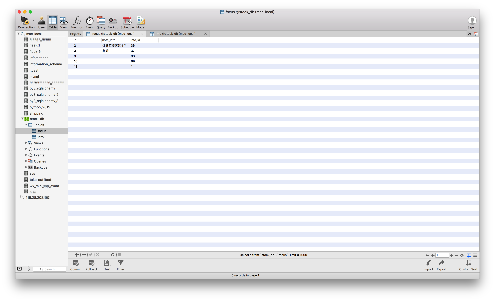

股票案例
1. 准备数据
1.1 创建数据库
create database stock_db charset=utf8;
1.2 选择数据库
use stock_db;
1.3 导入数据
stock_db.sql在课件中
source stock_db.sql
1.4 表结构如下
mysql> desc focus;
+-----------+------------------+------+-----+---------+----------------+
| Field | Type | Null | Key | Default | Extra |
+-----------+------------------+------+-----+---------+----------------+
| id | int(10) unsigned | NO | PRI | NULL | auto_increment |
| note_info | varchar(200) | YES | | | |
| info_id | int(10) unsigned | YES | MUL | NULL | |
+-----------+------------------+------+-----+---------+----------------+
mysql> desc info;
+----------+------------------+------+-----+---------+----------------+
| Field | Type | Null | Key | Default | Extra |
+----------+------------------+------+-----+---------+----------------+
| id | int(10) unsigned | NO | PRI | NULL | auto_increment |
| code | varchar(6) | NO | | NULL | |
| short | varchar(10) | NO | | NULL | |
| chg | varchar(10) | NO | | NULL | |
| turnover | varchar(255) | NO | | NULL | |
| price | decimal(10,2) | NO | | NULL | |
| highs | decimal(10,2) | NO | | NULL | |
| time | date | YES | | NULL | |
+----------+------------------+------+-----+---------+----------------+
2. 效果

